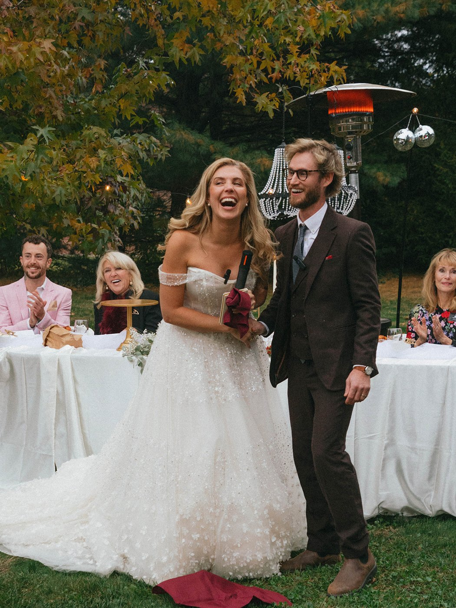
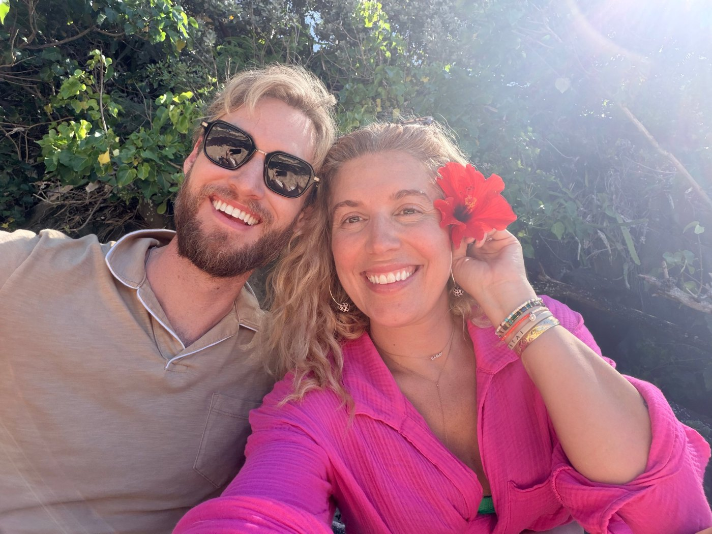
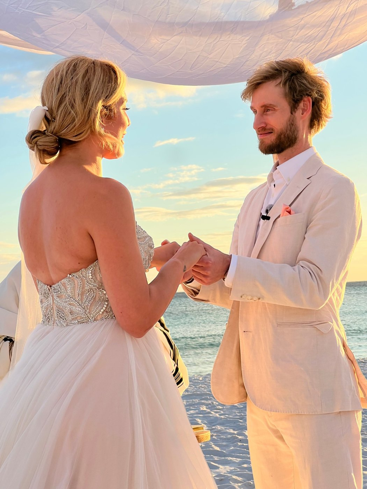

The rested is a faith-forward lifestyle and coaching community for women who refuse to put their lives on hold while they wait on God.
I know how easy it is to plan your future around one thing you’re praying will happen. I also know there is still a woman that God has predestined you to become on that journey. That’s why I’m building the rested: a place to hold the hope, keep living and belong.
Steward your Now.


You all rallied around my story, and God told me to build. Because your story used to be mine, and I want my process and promise to become your hope.
What started as one post quickly became something much bigger.
Not because women needed another reminder to “be patient.” They needed someone to finally say:
You can want what’s next without putting your whole life on hold until it gets here.
The rested is where that conversation becomes something more.
Maybe it’s marriage. A baby. Healing. A fresh start. Or an idea that keeps finding its way back to you, even after you’ve politely asked it to wait until things calm down.
You love God. You’re doing your best. You would also appreciate a little clarity on the timeline.
The rested is for the woman who wants honest friendship, space to grow, and encouragement to do something with the life in front of her. You don’t need a business, a five-year plan, or a beautifully packaged testimony to belong.
“I’ll live when…”
“I’ll live now.”
This has been built for you!
Find women you can be honest with. Share the prayer request, celebrate the good news, or say, “This week has been a lot.”
You don’t have to explain your season here.
Make room for deeper faith, stronger confidence, healthier rhythms, and the choices shaping who you’re becoming.
You don’t have to arrive before you’re allowed to grow.
Start the business. Rebuild the routine. Explore the idea. Make room for the calling.
You don’t have to know the whole plan to take the next step.
Honest conversation, shared prayer, encouragement, and spaces to belong with women who understand the season you’re in.
Live coaching, guided challenges, accountability, and practical next steps to help you grow while you wait.
Focused resources across faith, relationships, fertility, health, confidence, business, and the life you’re building now.
Get in from the beginning, and have a voice in what the rested continues to become.

Think of me as your trusted confidant, slightly unhinged internet bestie, dedicated prayer partner, and business/purpose mentor.
I’ve dated “the bad boy” and “the rich guy,” and almost married wrong 3x. I’ve built the big businesses, worked in 13 different industries and been featured in Forbes twice, a blessing.... BUT what I learned is that patterns are more important than potential and impressive on paper doesn’t equal fulfilling in real life. Some of those lessons came with heartbreak. Others came with six figures in entrepreneurial tuition.
I eventually married the nerdy hot guy, and I’d choose him over and over again. However, a ring, a headline, or another business win was never supposed to carry the weight of my entire identity, I let the timelines become my obsession and I burnt out. There had to be more to living than waiting for the next thing to finally make me feel fulfilled.
These are the experiences I’m bringing to this table. You can simultaneously share what’s breaking your heart and what you’re dreaming about building. We can cry, pray, laugh, and work through your next step. I’ll celebrate you, help you make a plan, and say the hard stuff with love. Being in your corner doesn’t mean agreeing with every decision, sis. It means caring enough to be honest.
I know what it’s like to trust God and still have questions about His scheduling. He is already doing a lot in your life even when the one thing you’re praying for still hasn’t happened, I am here to help you see it and live it.
It’s why I’ve built the rested.
Rest is holy to God. We don’t have to feel guilty for slowing down or confuse it with giving up. We can grow, build, and take action from a place of peace instead of panic. And we don’t have to figure it all out alone.
This is the place to bring every heart desire you’re praying for and the ideas you’re thinking about building. This is a room for hype and help. It’s been built to hold both for you.
“Evie’s story perfectly aligned with mine. At 30, I was lost and had no hope of finding a husband, her community has given me purpose and other women to talk to, and I no longer feel alone. Don’t even question joining this community, do it now!!!”
No. Building might mean a business, a new habit, a creative project, or a more intentional life. Your next step gets to look like yours.
No. Those stories are part of mine, and they’re welcome here. So are women navigating marriage, motherhood, healing, reinvention, and questions about what comes next.
Yes. Faith is part of our foundation and our conversations. You can bring your questions along with your hope.
Yes. Live group coaching with me is included in your membership. There’s no additional fee to join those calls.
The rested is taking shape with the women who join it. Bring your perspective, your questions, and the part of your life you’re ready to give some attention.
You can still want what you’re praying for. You can also start building something good today.
JOIN THE WAITLIST →